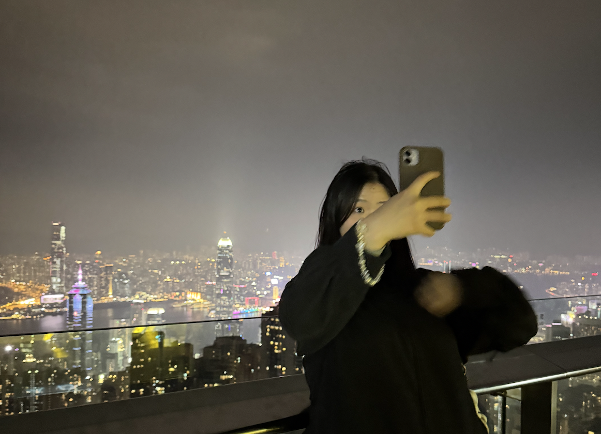

MICHELLE HE
~ Verschiebe nie auf morgen, was du auch heute besorgen kannst.

~ Verschiebe nie auf morgen, was du auch heute besorgen kannst.
I am a creative and detail-oriented individual with a passion for visual storytelling, digital media, and design. With experience in video editing, basic programming, and artistic expression through drawing and painting, I enjoy bringing ideas to life in innovative ways. My ability to combine structure with creativity allows me to work efficiently while exploring new artistic approaches. “If you want to find something new, you have to be willing to look beyond what you already know.” – I believe that true innovation comes from curiosity and the courage to experiment. That's why I use my website not only as a portfolio to showcase my various creative facets but also as a space to share random thoughts, experiences, and creative projects with friends and like-minded people. It's a reflection of my ever-evolving journey, where inspiration meets expression.
in diffrent kind of fields
Soft Skills
Hard Skills
I'm at the beginning of my creative journey and still in the process of discovering my path. I'm excited about every opportunity to grow and develop my skills. Whether it's work and travel, volunteering, or creative collaborations, I'm always eager to learn and contribute. Click the button to send me an email — I'd love to connect!
Contact Me